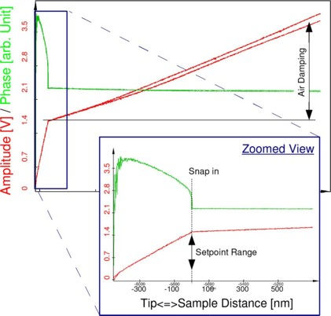

|
参数
|
按照通用步骤中的步骤操作。关于AC模式调节过程的信息，请参考AFM AC模式。
设定点
与AFM AC模式测量相比，应注意SNOM AC悬臂梁比AFM AC模式悬臂梁更长且明显更宽。这导致振荡振幅的空气阻尼显著强于AFM AC模式悬臂梁（见图1）。

图1：相位（绿色）和振幅（红色）随探针-样品距离的典型曲线。可用的设定点范围在放大视图中标示。
设定点应显著低于自由振幅（例如1/4）。这是必要的，因为空气阻尼很强，从图1中的振幅和相位距离曲线可以看出。图1中显示的曲线覆盖的总探针-样品距离超过10µm，由于探针和样品之间的气垫，振荡仍然受到阻尼。因此，在确定自由振荡振幅时，将探针移动到离样品表面足够远（例如100µm）是很重要的。
SNOM AC测量的设定点可以在图1放大视图所示的范围内选择。（较高的设定点会导致较弱的样品-探针相互作用。）